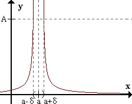
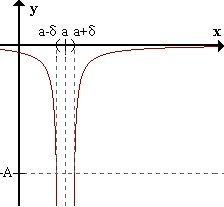
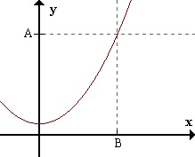
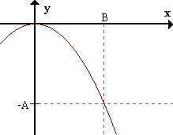
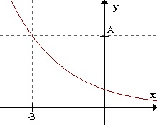
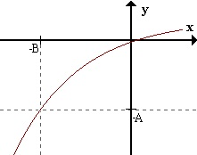
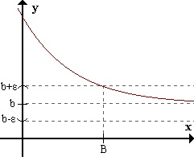
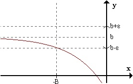
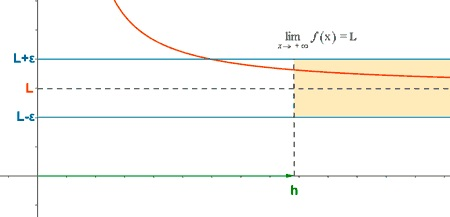

lim𝓍 ⇒ 𝒶 ƒ(𝓍) = + ∞ ⇔ para todo A > 0 existe δ > 0 / para todo 𝓍 perteneciente al E*a,δ ƒ(𝓍) > A.
El límite de ƒ(𝓍) cuando 𝓍 → 𝒶 es infinito positivo, si para cualquier número positivo A (tan grande como se quiera), podemos encontrar un número δ tal que, para todos los 𝓍 dentro
del entorno reducido de 𝒶 de radio δ se cumple que ƒ(𝓍) es mayor que A.
En otras palabras, si para cualquier número positivo A que consideremos, existe un entorno reducido de 𝒶 donde la función vale más que A, quiere decir que ƒ(𝓍) puede hacerse mayor que cualquier número,
con tal de que 𝓍 se acerque lo suficiente a 𝒶. Por eso se dice que el límite de ƒ(𝓍) cuando 𝓍 tiende a 𝒶 es +∞

Caso:
lim𝓍 ⇒ 𝒶 ƒ(𝓍) = - ∞ ⇔ para todo A > 0 existe δ > 0 / para todo 𝓍 perteneciente al E*a,δ ƒ(𝓍) < - A.

Caso:
lim𝓍 ⇒ +∞ ƒ(𝓍) = + ∞ ⇔ para todo A > 0 existe B > 0 / para todo 𝓍 > B ƒ(𝓍) > A.

Para cualquier número positivo A (por grande que sea), es posible encontrar un número positivo B tal que para todos los 𝓍 mayor que B, ƒ(𝓍) es mayor que A. Es decir que ƒ(𝓍) es mayor que A.
Es decir que ƒ(𝓍) puede ser mayor que cualquier número, si 𝓍 es lo suficientemente grande.
Caso:
lim𝓍 ⇒ +∞ ƒ(𝓍) = - ∞ ⇔ para todo A > 0 existe B > 0 / para todo 𝓍 > B ƒ(𝓍) < - A.

Caso:
lim𝓍 ⇒ -∞ ƒ(𝓍) = + ∞ ⇔ para todo A > 0 existe B > 0 / para todo 𝓍 < - B ƒ(𝓍) > A.

Caso:
lim𝓍 ⇒ -∞ ƒ(𝓍) = - ∞ ⇔ para todo A > 0 existe B > 0 / para todo 𝓍 < - B ƒ(𝓍) < - A.

Caso:
lim𝓍 ⇒ +∞ ƒ(𝓍) = b ⇔ para todo ε > 0 existe B > 0 / para todo 𝓍 > B ƒ(𝓍) pertenece al Eb,ε.

Caso:
lim𝓍 ⇒ -∞ ƒ(𝓍) = b ⇔ para todo ε > 0 existe B > 0 / para todo 𝓍 < - B ƒ(𝓍) pertenece al Eb,ε.

Límites al infinito y asíntotas horizontales
El límite de una función ƒ(𝓍) cuando 𝓍 tiene a +∞, es un número real L cuando para valores muy grandes de 𝓍 los valores de la función se aproximan al número L.
De manera más precisa, diremos que la función ƒ(𝓍) tiene por límite L cuando 𝓍 → +∞ y lo representamos por:
limx → +∞ƒ(𝓍) = L
si dado un ε > 0 existen un h tal que si 𝓍 > h entonces ∣ƒ(𝓍) - L∣ < ε.

La función ƒ tiene una asíntota horizontal en y = L.